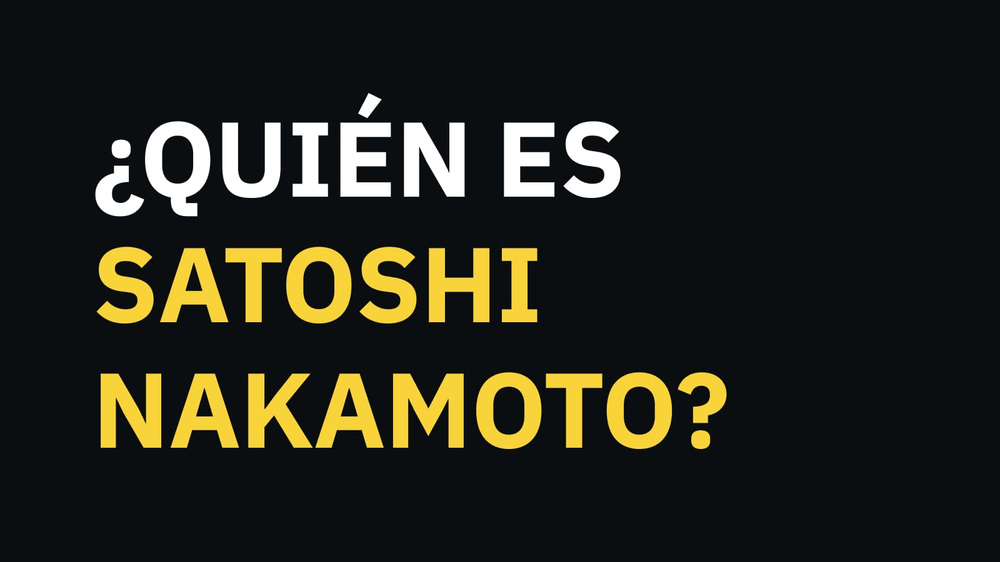

Que es Bitcoin?
El Bitcoin es una criptomoneda o moneda virtual, concretamente la primera que fue desarrollada. Es la criptomoneda que le ha marcado el camino a todas las demás que llegaron después utilizando su tecnología. Esta tecnología es la cadena de bloques o blockchain, que también se utiliza para otras cosas. La primera de las criptomonedas fue creada "Satoshi Nakamoto", que es el seudónimo que corresponde a una persona que nadie sabe exactamente quién es, aunque ha habido muchas teorías. Esta persona publicó en 2009 un artículo en el que describía un sistema de pagos P2P al que llamó Bitcoin. Al cabo de unos meses él mismo publicó la primera versión del software que permite gestionar la red de la moneda, y empieza a interactuar con los primeros interesados en foros. La cantidad total de bitcoins que se emiten cada año está determinada por su algoritmo, y pasa lo mismo con el resto de criptomonedas. El bitcoin está desarrollado para que cada cuatro años se reduzca por dos su producción, y para que sólo se emitan un total de 21 millones de Bitcoins. Después, simplemente dejarán de crearse. Esto es una diferencia fundamental con las monedas convencionales, puesto que los bancos modifican su valor a su libre albedrío. Por lo tanto, las monedas se pueden devaluar, mientras que el bitcoin quiere ofrecer algo más de estabilidad.